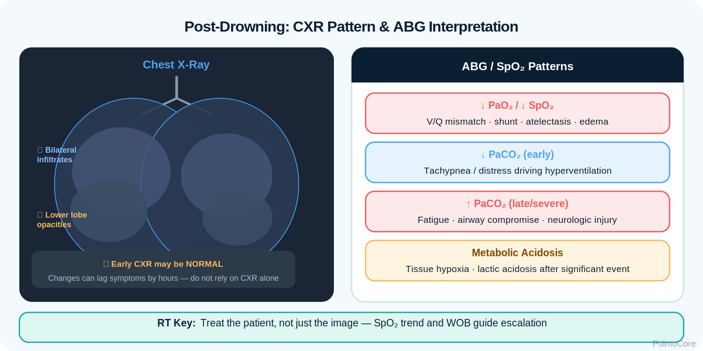
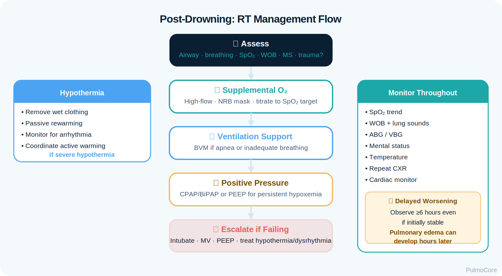

Drowning is a process of respiratory impairment from submersion or immersion in liquid. This module focuses on RT-level recognition, aspiration-related lung injury, oxygenation failure, delayed pulmonary deterioration, airway support, diagnostics, and escalation after a nonfatal drowning event.
By the end of this module, learners should be able to connect submersion/immersion exposure, aspiration, surfactant disruption, atelectasis, V/Q mismatch, hypoxemia, monitoring priorities, and RT escalation decisions.
1. Explain pathophysiology Describe how liquid exposure causes hypoxemia, aspiration injury, surfactant washout, atelectasis, shunt, and possible ARDS.
2. Interpret assessment data Use SpO₂, ABGs, breath sounds, WOB, chest imaging, temperature, and mental status to judge severity.
3. Prioritize treatment Choose oxygenation, airway support, ventilation, PEEP/CPAP, warming, and trauma precautions when appropriate.
Watch this quick overview before moving into the disease snapshot.
Disease Snapshot
Near drowning is commonly used to describe survival after a drowning event, but modern terminology favors nonfatal drowning. “Wet drowning” is not a preferred diagnostic label, but students may hear it used to describe drowning with liquid aspiration. RTs should focus on the mechanism: respiratory impairment after liquid exposure.
What it is: Respiratory impairment after submersion or immersion in liquid.
Primary problem: Hypoxemia from aspiration, atelectasis, pulmonary edema, or impaired ventilation.
RT priority: Assess airway, breathing, oxygenation, ventilation, WOB, lung sounds, and need for positive pressure.
RT Clinical Connection
The RT should not be reassured by a patient who looks “better” immediately after rescue but remains tachypneic, coughing, hypoxemic, or fatigued. Pulmonary injury can evolve as surfactant dysfunction, atelectasis, and inflammatory edema progress.
Board Prep Frame
Think drowning → hypoxemia first. Then evaluate aspiration injury, delayed pulmonary edema/ARDS, hypothermia, trauma mechanism, oxygen response, ABG trend, and need for CPAP, PEEP, or intubation.
Quick Pre-Check
Start with the core drowning pattern
Which statement best describes the main respiratory threat after a nonfatal drowning event?
Anatomy & Pathophysiology
Drowning causes respiratory impairment when liquid reaches or threatens the airway. The patient may aspirate liquid, develop laryngospasm, lose surfactant function, form atelectasis, and develop V/Q mismatch or shunt. The final common pathway is inadequate oxygen delivery to the brain, heart, and tissues.
Visual learning: Trace how liquid exposure becomes an oxygenation problem before it becomes a ventilatory failure problem.
What Changes After Liquid Aspiration
Change
What Happens
Why It Matters
Laryngospasm
Vocal cords may reflexively close.
Can worsen hypoxemia and make ventilation difficult.
Aspiration
Liquid and contaminants enter the airway.
Irritates airways and alveoli.
Surfactant washout
Alveoli become unstable.
Promotes atelectasis and reduced compliance.
Atelectasis
Alveoli collapse.
Creates shunt physiology and hypoxemia.
Pulmonary edema
Fluid/inflammation worsens gas exchange.
May require positive pressure and escalation.
Danger Sign
A patient who develops worsening cough, crackles, tachypnea, low SpO₂, frothy sputum, or increasing oxygen requirement after rescue may be developing aspiration-related pulmonary edema or ARDS.
Click the Drowning Injury Hotspots
Click each hotspot to reveal how the structure contributes to post-drowning respiratory impairment.
Start here: Click all four hotspots to complete this activity.
0 / 4 hotspots reviewed
Etiology, Risk Factors & Scene Clues
Drowning risk increases when airway access, consciousness, temperature, swimming ability, supervision, alcohol/drug exposure, seizure risk, trauma, or water conditions create a mismatch between the patient’s ability to breathe and the environment.
Risk Factor
Why It Matters
RT/Clinical Focus
Unwitnessed submersion
Duration and hypoxic burden may be unknown.
Monitor closely even if initially awake.
Diving or fall
Raises trauma and C-spine concern.
Protect airway while limiting neck movement.
Cold water exposure
May cause hypothermia and dysrhythmia risk.
Assess temperature and support rewarming.
Contaminated water
May increase infectious/chemical irritation risk.
Report exposure details and monitor deterioration.
Seizure, syncope, intoxication
May explain submersion and aspiration risk.
Assess neurologic status and airway protection.
Sort the Drowning Factors
Choose the best category for each item, then check your answers.
Unwitnessed submersion
Apply oxygen and support ventilation
Diving injury mechanism
Increasing oxygen requirement with crackles
Use CPAP/PEEP when indicated
Complete the sorting activity to continue.
Clinical Manifestations
Presentation can range from mild cough after rescue to apnea, respiratory failure, or cardiac arrest. RT assessment should prioritize oxygenation, ventilation, airway protection, breath sounds, work of breathing, mental status, temperature, and trauma clues.
Delayed symptoms matter. A patient who initially coughs but later develops worsening respiratory distress, crackles, or hypoxemia needs urgent reassessment.
Diagnostics & Assessment
Diagnostics help quantify oxygenation/ventilation, identify aspiration-related lung injury, monitor delayed deterioration, and detect trauma, hypothermia, or neurologic complications.

Visual learning: Pair the chest image with ABG/SpO₂ trends. Early imaging may be normal even when symptoms require monitoring.
High-Yield Data
Test / Assessment
What It Helps Determine
SpO₂ trend
Immediate oxygenation status and response to therapy.
ABG or VBG/clinical ventilation assessment
Hypoxemia, acidosis, hypercapnia, and ventilatory failure risk.
Chest x-ray
Aspiration changes, edema, atelectasis, alternate injury; may lag behind symptoms.
Temperature
Hypothermia severity and rewarming need.
ECG/cardiac monitoring
Dysrhythmias after hypoxemia or hypothermia.
Trauma evaluation
C-spine, head injury, or chest trauma after diving/fall mechanism.
ABG Patterns
Pattern
Meaning
Low PaO₂ / low SpO₂
Hypoxemia from V/Q mismatch, shunt, atelectasis, or edema.
Low PaCO₂ early
Hyperventilation from distress or anxiety.
Rising PaCO₂
Fatigue, hypoventilation, airway compromise, or neurologic impairment.
Metabolic acidosis
Possible tissue hypoxia/lactic acidosis after significant hypoxic event.
Severity Classification & Monitoring Priorities
Severity is driven by respiratory status, oxygen requirement, mental status, temperature, submersion history, trauma concern, and response to initial support. Observation is important when symptoms or abnormal oxygenation persist.
Severity Pattern
Typical Findings
Mild / low risk
Brief exposure, normal mentation, normal SpO₂, minimal cough, no distress.
Moderate concern
Persistent cough, tachypnea, abnormal breath sounds, oxygen need, vomiting, fatigue.
Escalate Severe hypoxemia, AMS, apnea, worsening crackles, rising PaCO₂.
Monitoring Activity
A rescued swimmer is awake but has persistent coughing, crackles, SpO₂ 90% on room air, and increasing work of breathing. What is the best interpretation?
Red Flags / Danger Signs
The key question is whether the patient can oxygenate, ventilate, protect the airway, and maintain neurologic/cardiovascular stability after the drowning process.
Red Flag
Why It Matters
SpO₂ remains low despite oxygen
Suggests significant shunt, atelectasis, edema, or ARDS risk.
Altered mental status or seizure
May reflect hypoxia, head injury, hypothermia, or need for airway protection.
Apnea, gasping, or hypoventilation
Immediate ventilatory support may be needed.
Worsening crackles or frothy sputum
Possible pulmonary edema.
Rising PaCO₂ or worsening acidosis
Ventilatory failure or systemic hypoxia concern.
Diving/fall mechanism
Potential C-spine or head injury.
Management & Treatment
Management focuses on reversing hypoxemia, supporting ventilation, preventing aspiration complications, identifying trauma/hypothermia, and escalating when oxygenation or airway protection is inadequate.

Visual learning: Use a stepwise RT flow: assess → oxygenate → ventilate → add positive pressure → intubate/escalate if failing.
RT Management Priorities
Priority
Action
Why It Helps
Airway
Position, suction as needed, protect C-spine if trauma suspected.
Maintains patency and reduces aspiration/trauma risk.
Oxygenation
Apply supplemental oxygen; titrate to clinical target.
Treats the primary threat: hypoxemia.
Ventilation
Bag-mask ventilation or mechanical ventilation if apnea/failure.
Select the steps in the best general order for a symptomatic nonfatal drowning patient.
Assess airway, breathing, circulation, mental status, and trauma risk
Apply supplemental oxygen
Support ventilation if apnea or inadequate breathing
Consider CPAP/PEEP for persistent hypoxemia
Obtain/track diagnostics and temperature
Escalate for worsening oxygenation or mental status
Complete the sequence activity to continue.
Escalation, ARDS Risk & Ventilator Considerations
Severe drowning-related lung injury can progress to respiratory failure or ARDS. Escalation is needed when oxygenation remains poor, ventilation fails, mental status deteriorates, or the patient cannot protect the airway.
Vent goal: Support oxygenation and ventilation while recruiting alveoli and limiting lung injury.
Settings concept: Use appropriate PEEP for atelectasis/shunt physiology and monitor compliance/oxygen response.
Board Pearl
Post-drowning hypoxemia is not simply “water in the lungs.” Think surfactant dysfunction, atelectasis, V/Q mismatch, shunt, pulmonary edema, and possible ARDS. Positive pressure may be needed when oxygen alone is not enough.
Respiratory Therapist Role
The RT is central to post-drowning assessment, oxygen delivery, airway support, ventilation, positive-pressure therapy, monitoring, patient transport readiness, and escalation communication.
Suction, positioning, BVM, intubation support when needed.
Maintains oxygen delivery and protects airway.
Communicate escalation
Report worsening SpO₂, WOB, ABG, mental status, or CXR changes.
Promotes timely intervention.
Guided Unfolding Case Study
The Swimmer Who Looked Better
This guided case reveals one clinical stage at a time. Learners make an RT decision, receive feedback, and then continue to the next stage.
Stage 1: Initial Presentation
A 16-year-old is pulled from a lake after a brief submersion. The patient is awake, coughing, anxious, and wet. Friends report a possible dive from a dock.
RR 30/min
SpO₂ 89% on room air
Breath Sounds Crackles at bases
Decision Question: What is the RT priority?
Stage 2: Oxygen Response
After oxygen is applied, SpO₂ improves to 94%, but the patient continues coughing and has mild retractions. Crackles persist.
Decision Question: What should the RT recommend?
Stage 3: Delayed Deterioration
Two hours later, the patient becomes more tachypneic. SpO₂ falls to 88% despite oxygen. Chest x-ray shows bilateral patchy opacities.
Decision Question: What is the most likely concern?
Stage 4: Escalation Decision
The patient is tiring, has worsening retractions, and needs high oxygen to maintain SpO₂ near 90%.
Decision Question: Which escalation concept is most appropriate?
Case Wrap-Up
RT Takeaway: After nonfatal drowning, improvement is measured by sustained oxygenation, work of breathing, mental status, lung sounds, and trend over time — not by being awake immediately after rescue.
If the patient worsens: increasing oxygen need, crackles, altered mental status, rising PaCO₂, or bilateral opacities suggest urgent escalation.
Knowledge Check
Board-Style Practice
Answer each question to complete this activity. Answer choices shuffle each time the lesson opens.
Question 1
A patient rescued from a pool has persistent cough, crackles, and SpO₂ 89% on room air. What is the RT’s primary concern?
Question 2
Which finding is most concerning after a drowning event?
Question 3
Why can positive pressure help a symptomatic post-drowning patient with hypoxemia?
Question 4
A drowning patient jumped from a dock and now needs airway support. Which additional precaution matters?
0 / 4 questions answered
FAQ
Common Drowning Questions
Is “wet drowning” still the preferred term?
No. It is better to describe the actual problem: nonfatal drowning with or without aspiration, hypoxemia, pulmonary edema, or respiratory failure.
Can a patient worsen after initially looking okay?
Yes. Aspiration-related inflammation, surfactant dysfunction, atelectasis, and pulmonary edema can evolve after rescue.
What is the first RT priority?
Assess airway and breathing, correct hypoxemia, support ventilation when needed, and reassess frequently.
When should trauma precautions be considered?
Consider spinal precautions when the mechanism includes diving, fall, boating collision, unknown trauma, or altered mental status with possible injury.
Are antibiotics always needed?
No. Antibiotics are not the immediate RT priority and are not automatically indicated for every drowning event. Follow provider orders and clinical evidence of infection or contaminated exposure risk.
Why might CPAP or PEEP help?
Positive pressure may recruit collapsed alveoli, improve functional residual capacity, and reduce shunt-related hypoxemia.
What is the biggest board-style trap?
Do not assume that being awake after rescue means the patient is safe. Persistent respiratory symptoms or abnormal oxygenation require monitoring and escalation.
Summary & Clinical Pearls
Drowning is a respiratory impairment process after submersion or immersion. RT priorities include correcting hypoxemia, supporting ventilation, assessing airway protection, recognizing aspiration-related lung injury, considering hypothermia/trauma, and watching for delayed pulmonary edema or ARDS.
Must know: The primary immediate threat is hypoxemia.
Board pearl: Persistent cough, crackles, low SpO₂, or worsening WOB after rescue are not benign.